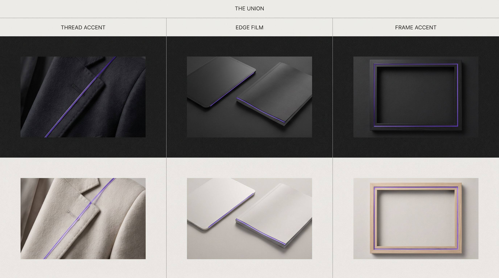

Thread accent · Wardrobe register
Thread accent
Tiny purple glass lining a jacket seam or stitch line.
The Seam adaptive purple glass. Subtle host-aligned accents.
Thread, edge, and frame accents on Carbon and Bone. Never rings, pours, pins, or Venns.

Tiny purple glass lining a jacket seam or stitch line.
Thin adaptive purple glass along a UI or print edge.
On a second look, the viewer notices subtle purple glass following a real structure. Michael remains the subject.
Written rules for The Seam adaptive glass.
Status: temporary stylescape accepted 2026-07-21, pending Identity Gate 4
The Seam is translucent purple glass that adapts to where it goes. It has no fixed signature shape. It lines up with the host form it meets: a jacket thread or seam, a UI edge, a frame rule, a print margin. The signature is adaptive placement and glass material, not a mark and not literal water.
None fixed. No rings. No discs. No Venn. No eye. No water pour sculpture.
Follow the existing line of the host: stitch, seam, edge, rule, corner. Small. Subtle. Almost missed on first glance.
seam, UI chrome edge, magazine rule, podcast frame. Glass quality, subtle.